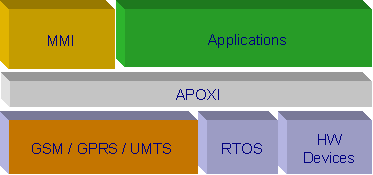
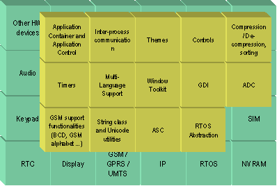
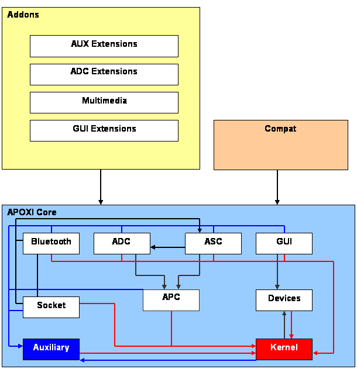

APOXI is an object oriented application framework for development of man machine interface and applications for mobile terminals. It is designed to meet the special requirements of mobile, embedded devices and exposes APIs which are specific to mobile phones.
Please note - APOXI does not incorporate ready to use applications but only provides the means for rapid MMI and application development. MMI and applications are built on top of APOXI. More about Comneons offerings of ready to use MMI and applications at the end of this document.
An application framework frees developers from daily re-occurring tasks and the need of starting his implementation tasks from scratch. The developer starts his project with an functionally empty application template and fills this template with functionality of his application. To implement these functionality the developer uses services and APIs exposed by the framework. Well designed frameworks only leave implementation tasks to the developer which relate directly to the application functionality.
Application frameworks guide developers through development process and implement paradigms the developer can or should follow. This significantly reduces the training efforts for developers and speeds up implementation time. Developers using the APOXI framework do not need to be mobile application development experts, but will find themselves in a software environment which is very similar to desktop (e.g. Windows) development. Of course embedded devices still restrict implementation in terms of real time behavior, memory and computing resources which APOXI can’t overcome – but APOXI helps handling these issues. Developers using APOXI simply take profit from the vast experience of APOXI developers.
As no application framework can cover all functionality of all applications, frameworks specialize to specific domains. The popular framework Microsoft Foundation Classes (MFC) specializes on MS Windows Application development. Applications are implemented following the Model-View-Control (MVC) paradigm, which is one of most popular paradigms for implementing graphical user interfaces. Other domains covered by MFC are data base access etc.

System Architecture
Like MFC is specialized for Windows application development, APOXI is optimized for needs of mobile phone MMI and application development. For this, APOXI exposes services and APIs for following domains:

APOXI abstracts underlying system
The main components of APOXI are GUI services, ADC and ASC, and application control mechanism. Many of the other functionality are side products of the implementation of these basic building blocks.
APOXI counts more then 250 classes so far – small helpers to complex code monsters. These classes are implemented by a team of very experienced developers, most of them with vast experience in application development and object oriented programming. Thus developers using these classes do not only benefit from the functionality exposed by the framework, but also learn OO technologies from experts.

The libraries Kernel and Auxiliary may be used from any library. The libraries AddOns and Compat are optional: AddOns contains extensions to the APOXI core libraries, which may be useful for an extended MMI. Compat contains obsolete classes to provide backward compatibility for applications written with older APOXI versions.
ASC exposes – among other services – interfaces for receiving and sending SMS PDUs. In order to ease the handling of these PDUs a wrapper class has been implemented that holds one or more PDUs (i.e. concatenated SMS). An application programmer must not know about PDU structure (header fields, data encoding etc).
When sending a text message, the programmer simply creates an instance of the PDU class and passes the message text to the SetText class method. The method internally handles encoding, partitioning the string into multiple PDUs if the string length exceeds the capacity of a single PDU, and initializes the according header fields (sequence number etc.). Other header fields are initialized as far as possible with default values. Thus sending a text message using this class only requires very little knowledge about SMS internals.
Experienced programmers can access all header fields and data area of PDU with other class methods.
If a concatenated SMS is sent, the developer must not care if the protocol stack supports sending concatenated SMS. He simply passes the PDU object to the according function and ASC will send single SMS messages if the signaling stack does not support that feature.